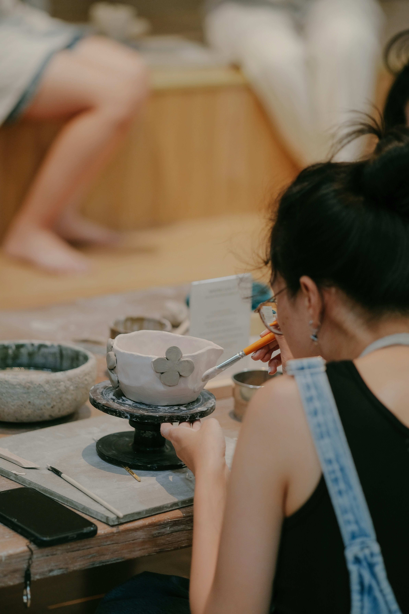

Conóceme

Declaración artística
Me llamo Maya Arévalo y llevo más de quince años explorando los límites entre la pintura, la escultura y la cerámica. Mi trabajo parte de una pregunta sencilla y obstinada: ¿qué ocurre cuando la mano toca la materia con intención?
Formada en la Facultad de Bellas Artes de la Universidad de Salamanca, he desarrollado un lenguaje propio que atraviesa varias disciplinas sin asentarse del todo en ninguna. La cerámica me enseñó la paciencia y el tacto. La pintura me dio la velocidad y el color. La escultura me habló de la gravedad y el espacio. La restauración me enseñó a escuchar.
Trabajo desde un taller en Castilla y León, donde conviven la arcilla húmeda, los pigmentos al óleo y las herramientas de restauración. Cada proyecto parte de la tensión entre lo efímero y lo permanente, entre la huella del gesto y la resistencia del material.
Compagino la creación propia con la restauración de obras patrimoniales: retablos, esculturas en terracota, pintura sobre tabla. Devolver la voz a piezas que el tiempo había enmudecido es, también, una forma de crear.
ContactarTrayectoria
Sala de Exposiciones Municipal, Salamanca
Encargo institucional, Zamora
Centro Cultural Caja Burgos, Burgos
Galería Arte Actual, Valladolid
Talavera de la Reina, Toledo
Junta de Castilla y León
¿Quieres saber más?
Encargos, colaboraciones, restauraciones o simplemente una conversación sobre arte.
Contactar